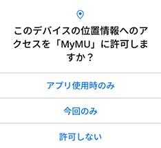
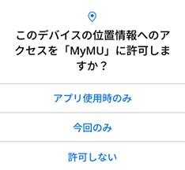

機器とルーターが接続済みの場合
すでに機器とルーターを接続済みの場合、「機器とルーターを接続済み」をタップして「スマートスイッチ（ファン用）を登録する（WPS）」に進んでください。

すでに機器とルーターを接続済みの場合、「機器とルーターを接続済み」をタップして「スマートスイッチ（ファン用）を登録する（WPS）」に進んでください。
接続するルーターのSSIDを選択し、「決定」をタップする


iOS搭載のスマートフォンでは、次のメッセージが表示されることがあります。その場合は「OK」をタップしてください。「OK」をタップしないと接続に失敗します。「許可しない」をタップした場合は、iOSのローカルネットワークの設定を変更してください。


 


オートメーション機能で位置情報を使用する場合は、位置情報の許可を求める画面で「Appの使用中は許可」「アプリの使用時のみ」をタップし、「正確な位置情報」を「オン」にしてください。オートメーション機能については取扱説明書をご確認ください。
機器が別のユーザーに登録されている場合は、次のメッセージが表示されます。「登録を続ける」をタップすることで、本機器の登録が行われ、別のユーザーからは機器の登録が削除されます。登録しない場合は「キャンセル」をタップします。